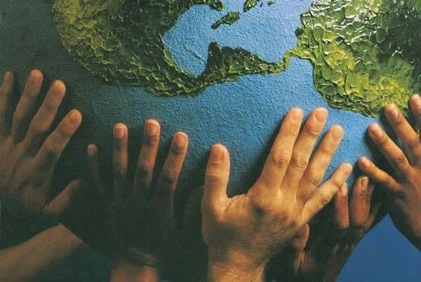
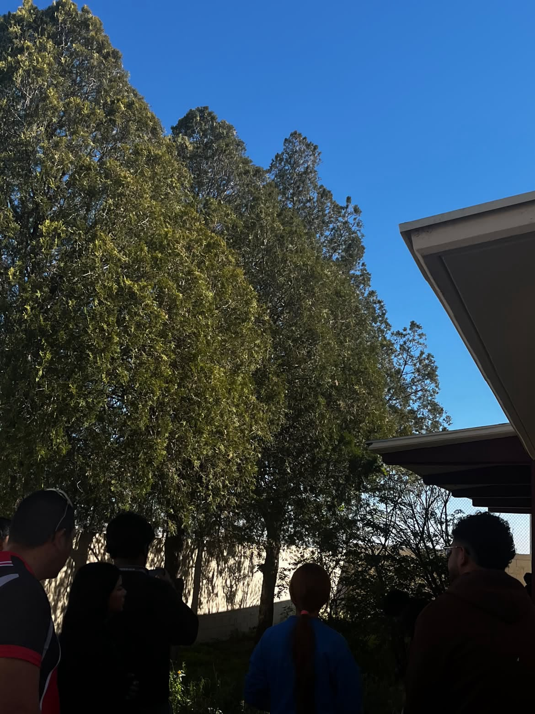
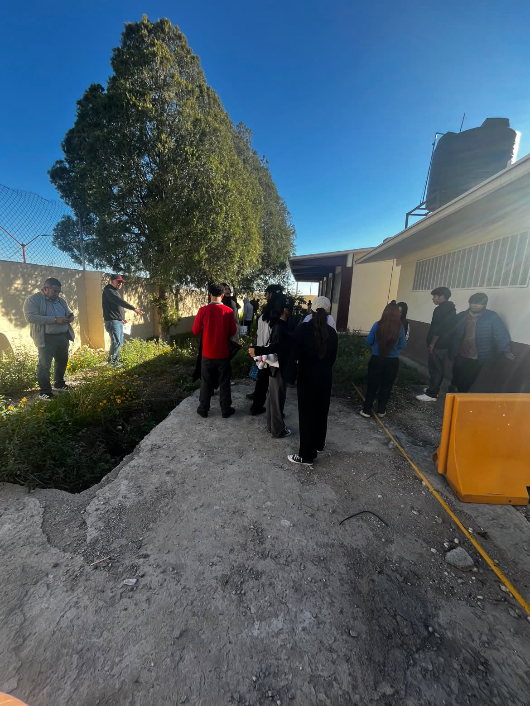
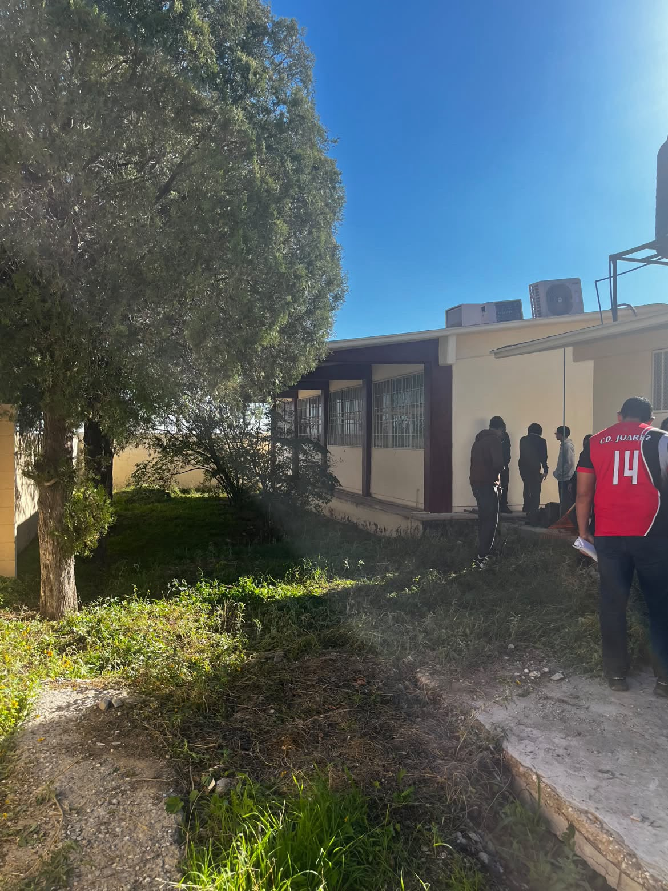

El reciclaje dentro del CBTIS 269 consiste en analizar toda la basura que se genera diariamente por alumnos, docentes y personal administrativo, para identificar qué materiales pueden ser reutilizados o reciclados. Al observar el plantel podemos reconocer los puntos donde se acumula mayor cantidad de residuos, detectar los problemas actuales y proponer soluciones reales adaptadas a nuestra institución. Este análisis es fundamental para el proyecto ECO‑VENADOS, ya que nos permite conocer la situación real de la escuela antes de implementar cualquier campaña de separación de residuos.
¿Qué residuos se generan en el CBTIS 269?
Dentro de las instalaciones del CBTIS 269 se generan múltiples tipos de residuos. El primero de ellos es el papel y el cartón, proveniente de hojas impresas, apuntes, cuadernos desechados, folletos, cartulinas y cajas usadas en talleres y laboratorios. También se genera una gran cantidad de plástico, principalmente botellas de agua, envases de refresco, empaques de galletas, bolsas plásticas y recipientes desechables de la cafetería. Además, encontramos latas de aluminio, residuos orgánicos como cáscaras de frutas y restos de alimentos, así como otros desechos sanitarios. La acumulación de todos estos materiales demuestra la necesidad urgente de implementar una separación adecuada para aprovechar aquellos que pueden ser reciclados.

¿Dónde se acumula más basura en el CBTIS 269?
Al observar las instalaciones del CBTIS 269 podemos identificar que los lugares donde se acumula mayor cantidad de basura son la cafetería, los patios principales, los pasillos cercanos a los salones y los contenedores generales de basura. La cafetería es uno de los puntos con mayor acumulación, ya que es el espacio donde los estudiantes consumen alimentos y bebidas durante los recesos. También se observa mucha acumulación cerca de los salones, debido a que muchos alumnos desechan sus residuos sin buscar un contenedor adecuado. Esta acumulación genera desorden, malos olores y aumenta la dificultad para separar los materiales reciclables.

¿Qué problemas existen actualmente en el CBTIS 269?
El principal problema que encontramos en el CBTIS 269 es la mezcla de todos los tipos de residuos dentro de los contenedores comunes, lo que impide realizar un reciclaje eficiente. Otro problema es la falta de contenedores diferenciados para cada tipo de residuo, además de la falta de conciencia ambiental en una parte de la comunidad estudiantil, ya que muchos alumnos no conocen la importancia de separar sus desechos. También se presenta la acumulación de basura en horarios de receso, la contaminación visual en patios y pasillos, y la dificultad para recolectar los materiales reciclables si no hay una organización clara por parte de la escuela.

Para solucionar los problemas detectados en el CBTIS 269, podemos implementar varias acciones. La primera es colocar contenedores diferenciados en patios, pasillos, salones y cafetería, identificados con colores para cada tipo de residuo. La segunda es realizar pláticas, carteles y talleres de educación ambiental para toda la comunidad escolar, explicando la importancia de separar correctamente los desechos. También se puede crear un comité ambiental integrado por estudiantes, docentes y personal de la escuela para vigilar, recolectar y gestionar los residuos reciclables. Con estas acciones, el CBTIS 269 podrá convertirse en un ejemplo de escuela sostenible, reduciendo la contaminación y fomentando la conciencia ambiental en todos sus integrantes.